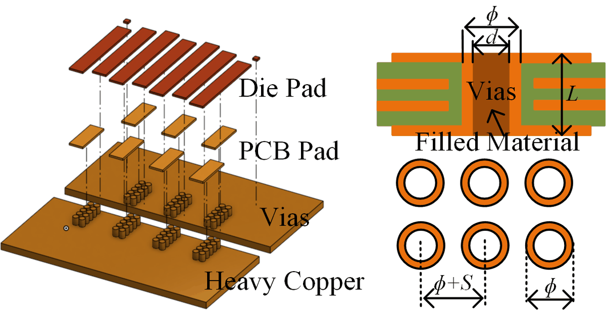
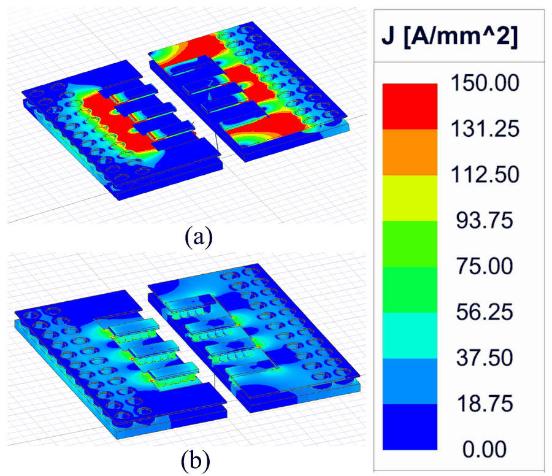

Research
Packaging and gate-drive design methods for high-current GaN power modules in electric-vehicle power conversion.
GaN HEMTs have the best switching figure of merit of any commercial power device, yet they are still confined below a few kilowatts, where a single die carries the whole load; the on-board chargers, fast chargers, and traction inverters of electric vehicles run at hundreds of amperes on Si and SiC. My dissertation, Switching Modeling, Driver Technology and Packaging of GaN HEMTs in High-Current Applications, removes three barriers to fast switching at high current, the narrow gate window of the p-GaN gate, the temperature dependence of the switching transient, and the fine-pitch lateral die that resists paralleling, at the gate-drive and package level.
1. Gate-drive voltage: the partial-bootstrap gate driver
An e-mode p-GaN HEMT leaves only a few volts between the Miller plateau and the gate's absolute maximum, so a driver fast enough to cut turn-on loss also invites gate oscillation. The partial-bootstrap gate driver (PBGD) lifts the drive rail only during the Miller plateau: the voltage-fall interval that dominates turn-on loss is accelerated while the current-rise interval that sets di/dt is untouched, so loss and overvoltage fall together, with no extra isolated supply, inductor, or control channel. Verified in double-pulse tests on 650 V / 150 A devices; a closed-loop version triggered by the drain voltage is in test. I also work on gate drivers for gate-injection transistors (GITs).

2. Temperature-adaptive switching: the NTC gate-resistor array
A GaN HEMT's threshold barely moves with temperature while its transconductance falls, so the device slows down as it heats, the opposite of Si and SiC, while the crosstalk constraint that sets the gate resistance relaxes. A fixed gate resistor sized at the cold corner wastes that margin. A wide-temperature transient model of the half-bridge gives the minimum safe gate resistance at each temperature, and a series–parallel array of negative-temperature-coefficient (NTC) resistors is fitted to it by constrained optimization. From −25 °C to 100 °C: 30% faster turn-on and 23% lower turn-on loss at 300 V, 120 A, and 100 °C, with the peak crosstalk voltage below threshold throughout.

3. Multi-chip packaging: a 650 V / 400 A GaN half-bridge module
The largest 650 V GaN die is rated at 150 A, so EV-class currents need paralleled dies, and with nanosecond transitions a fraction of a nanohenry of source-inductance mismatch is enough to unbalance them. The module puts the fine-pitch die attachment and the gate drivers on a thin-copper interface PCB and reaches the heavy-copper power routing through via-in-pad vertical current paths, so the two are optimized separately. Each die pad lands on a PCB pad that a cluster of filled vias ties straight down to the heavy copper, so the load current leaves the die vertically instead of crowding through the thin interface copper, and the commutation loop closes in the thickness of the stack. The symmetric layout holds the source-inductance mismatch below 9 pH with a 1.62 nH power loop, and both faces stay free for double-sided cooling. Rated 650 V / 400 A; validated at 400 V / 300 A in double-pulse tests and under continuous load.

{kind=link}

{kind=link}

Where this goes
GaN's commercial success stops at about 3 kW; on-board chargers (11–22 kW), DC fast chargers (30–350 kW), and traction inverters (100–300 kW) still belong to SiC MOSFETs and Si IGBTs. The gate-drive and packaging methods above are aimed at exactly that region: letting GaN switch at its own speed while carrying the currents those converters need. This work is part of a $5M U.S. Department of Energy Vehicle Technologies Office (VTO) project (2023–present).
Methods and tools
- Double-pulse testing of GaN HEMTs and modules from −25 °C to 100 °C
- Transient analytical (state-space) modeling of GaN bridge legs with calibrated nonlinear capacitances
- LTspice simulation with vendor device models; parasitic extraction in Ansys Q3D
- Thermal modeling of DBC and via-in-pad structures; thermal-imaging current-sharing tests
- Module design and assembly: interface PCB, heavy-copper PCB, DBC, via-in-pad, SMT processes
Earlier work: energy harvesting (M.S., 2020–2023)
At Huazhong University of Science and Technology I worked on electromagnetic vibration energy harvesting and the micro-power converters that go with it: non-uniform planar coils for higher output power, fully self-powered maximum-power-point tracking, and multi-input AC–DC converters for combining harvesters. That work appears in IEEE Transactions on Power Electronics, IEEE Transactions on Magnetics, IEEE Transactions on Industry Applications, and at ECCE; see Publications.